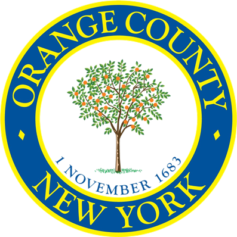

Map pins work best with a mouse or touch. Use List view for a fully keyboard-accessible directory of locations.

Find pantries, meals, benefits, and markets near you — filter by town, day, and program type.
Map pins work best with a mouse or touch. Use List view for a fully keyboard-accessible directory of locations.